RF test fixtures.
Test fixture design supporting satellite RF development.
Experience / Engineering in practice
Hands-on engineering, from satellite hardware and launch vehicles to racing, teaching, and independent builds.
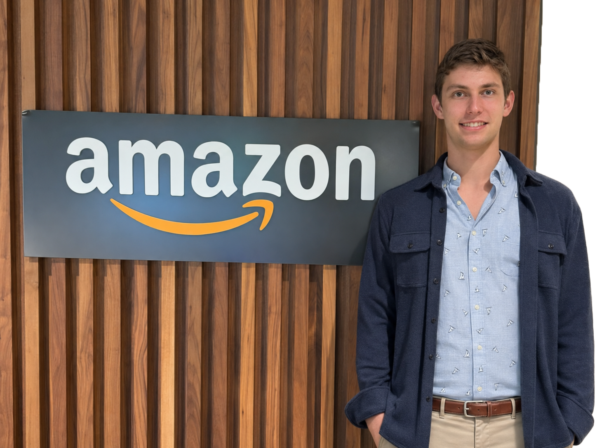
Hardware Development Engineering Intern
Designed, fabricated, and validated test hardware supporting satellite RF development.
Test fixture design supporting satellite RF development.
Fabrication of test hardware, taking designs into physical form.
Validation of test hardware for satellite RF development.
Manufacturing Engineering Intern
Supported flight-hardware manufacturing for New Glenn's second stage, developing process instructions, analyzing manufacturing problems, and implementing design-for-manufacturing improvements.
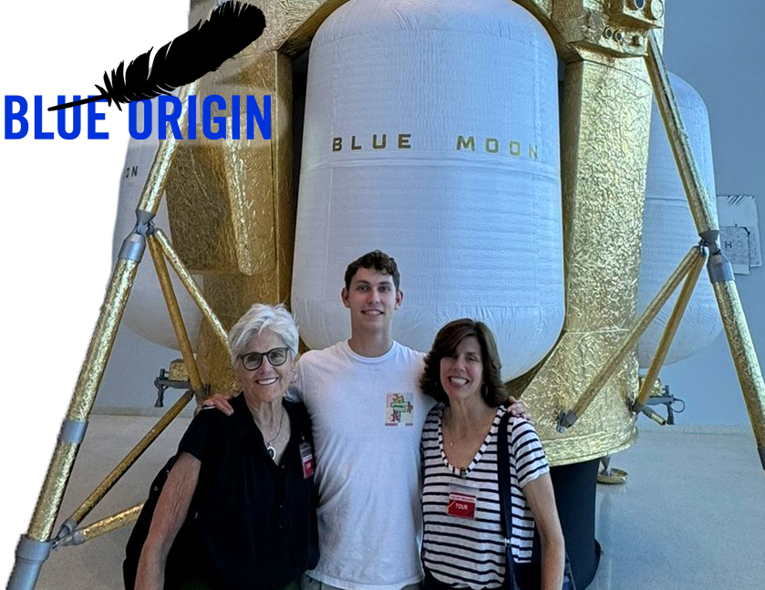
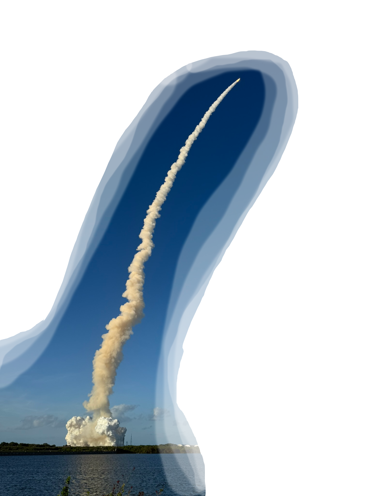
Developed process instructions and analyzed manufacturing problems for second-stage flight hardware.
Implemented manufacturing improvements with significant work in Creo and CATIA.
Developed a thrust-structure shimming process demonstrating savings of two weeks and $100,000.
Mechanical Engineer
Engineered a smart digital microscope using embedded systems to reduce average time-to-diagnosis in digital pathology by 70%. Created schematics and led production of three next-generation prototypes.
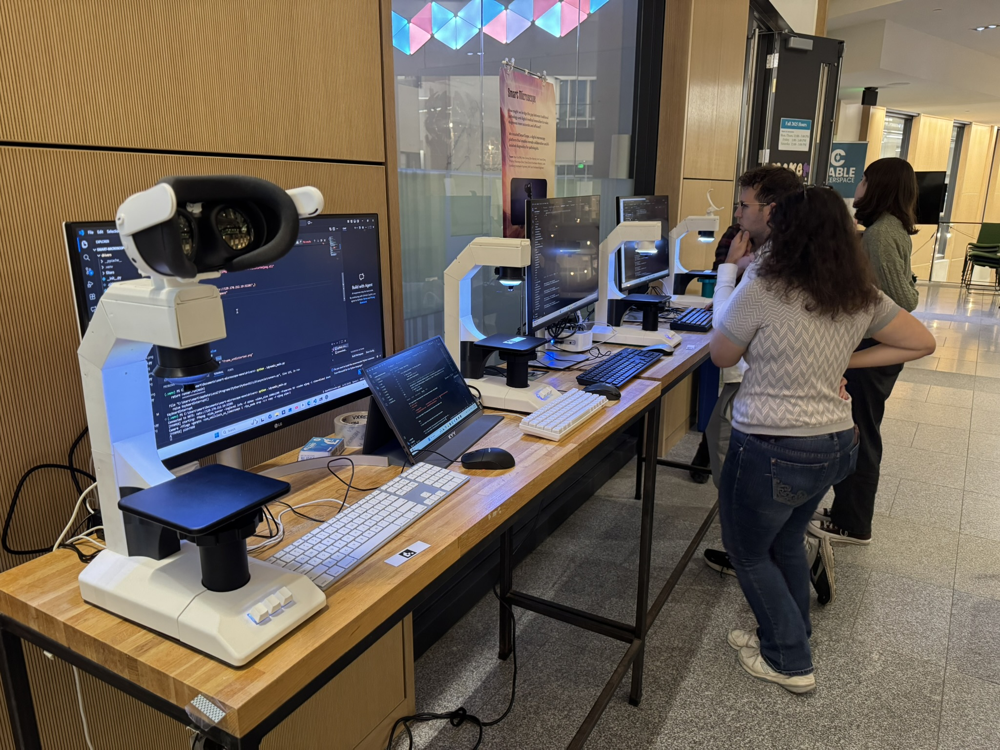
Designed and manufactured a smart digital microscope, integrating embedded systems for digital pathology.
Created schematics and led production of three next-generation prototypes.
Reduced plastic use by 63% and printing time by 24% in the next-generation prototypes.
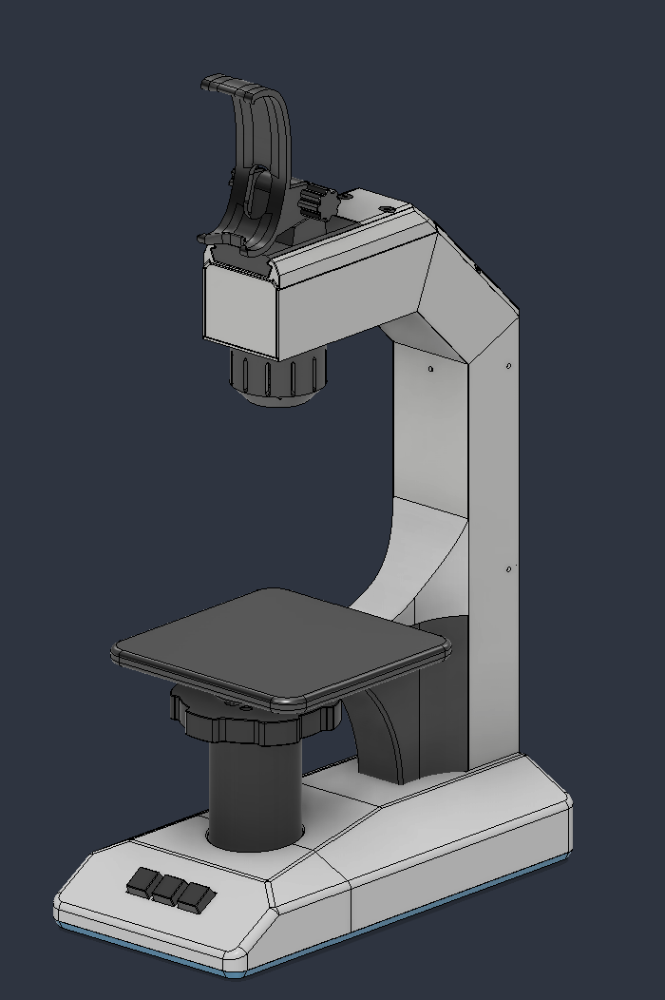
Team Lead
Led the development of an MVP E-Sticker, earning recognition for best project and marketing plan and an offer of funding to continue development with the Magnuson Center.
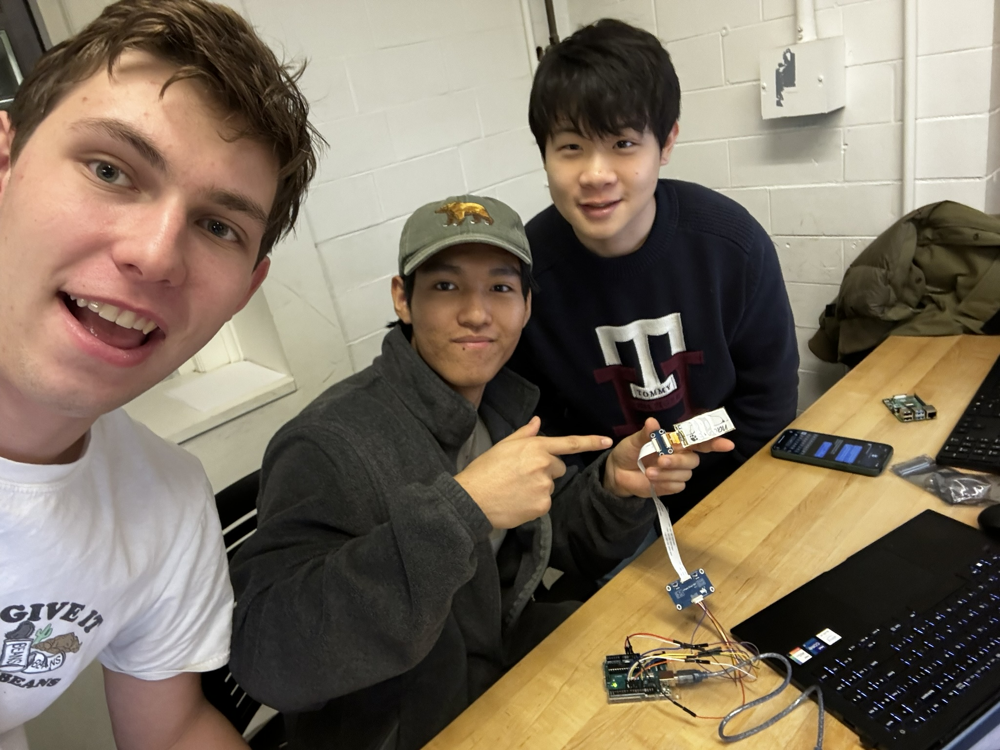
Ideated and led a team of five to build a minimum viable product of an E-Sticker.
Developed the marketing plan alongside the product, bringing the engineering and business sides of the project together.
Competed in front of a panel of Tuck faculty, entrepreneurs, and engineers, earning first place for the project and marketing plan and $200 in seed funding.
Mechanical Lead
Co-led cooling-loop design and construction, led the 2026 car's seat and firewall development, and guided new members in assembling essential vehicle components.
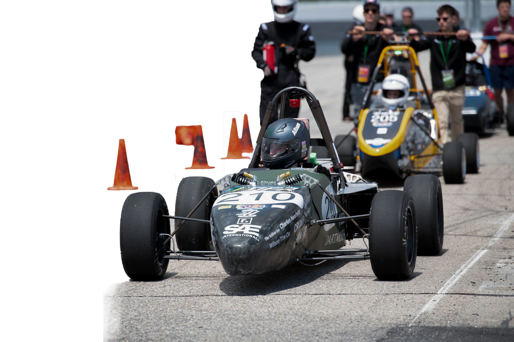
Co-led the cooling loop, reducing average coolant temperature by 3°C and cooling power consumption by 15%.
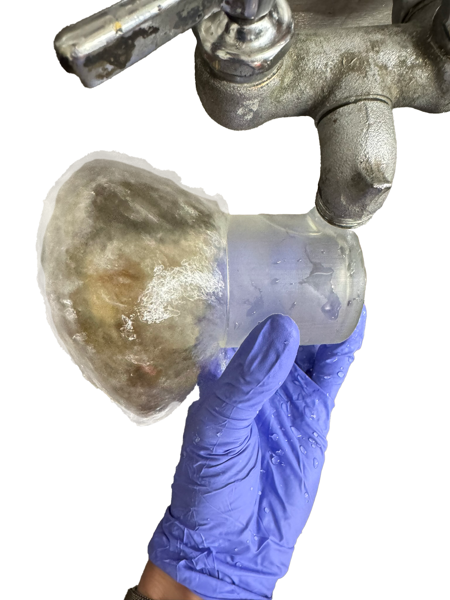
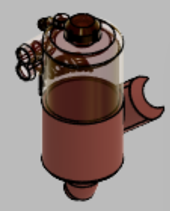
Led the design and creation of the 2026 car's seat and firewall, building on work supporting the 2024 car.
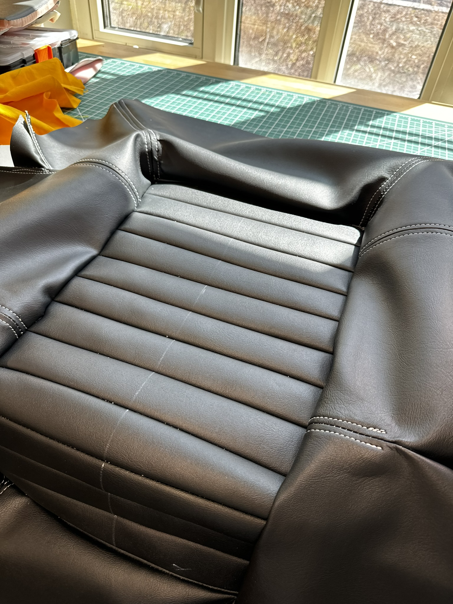
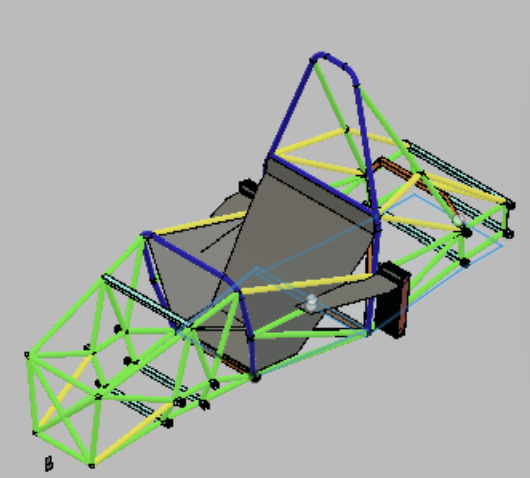
Led new members in assembling essential components for the 2026 car.
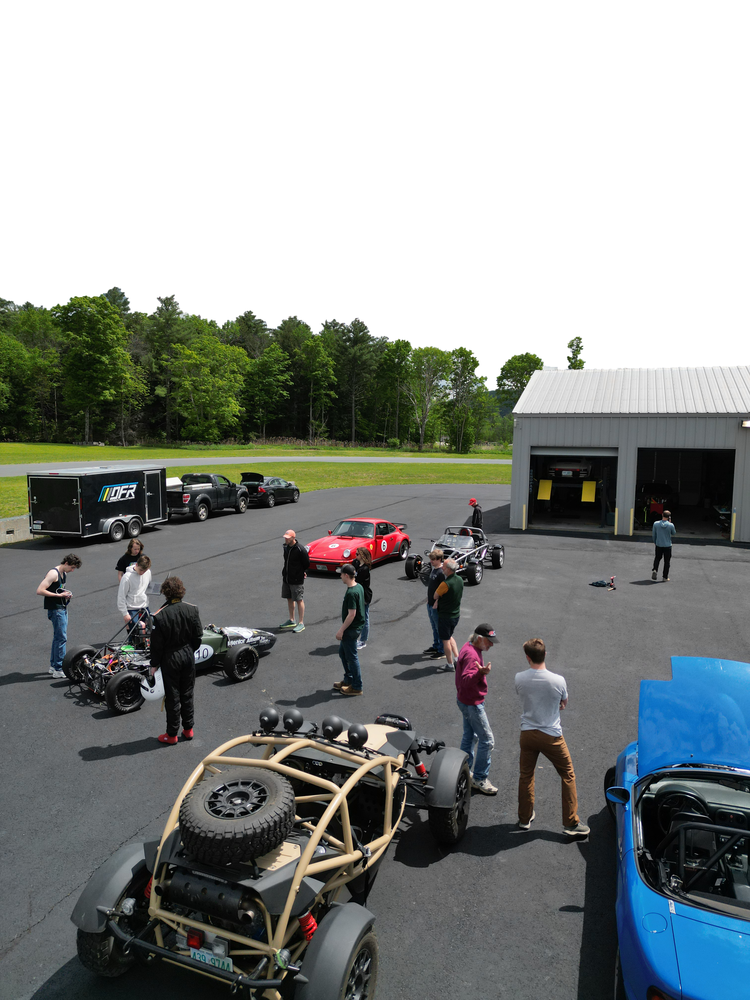
Teaching Assistant & Machine Shop Assistant
Helped students take engineering projects from design through fabrication, teaching machining, prototyping, and teamwork while supporting research and instructional work.
Apr – Jun 2024
First Machine Shop Assistant certified to operate and teach the largest tool set approved in a single term. Machined precision research components, built demos, and supported student fabrication.
Jun – Sep 2025
Guided students through a project-based engineering course, teaching design, marketing, manufacturing, and essential machining skills.
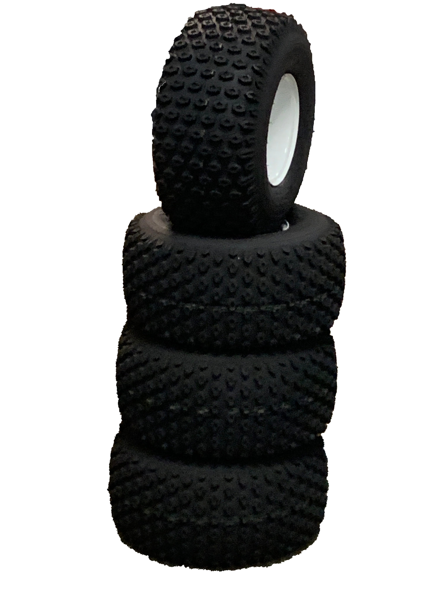
Independent Mechanical Design Engineer
Led a group of fourteen through the design and fabrication of a two seat dune buggy along with countless other passion projects. Check out my favorite projects on the projects page
"The Best Way to Learn is to Do"
Continue exploring